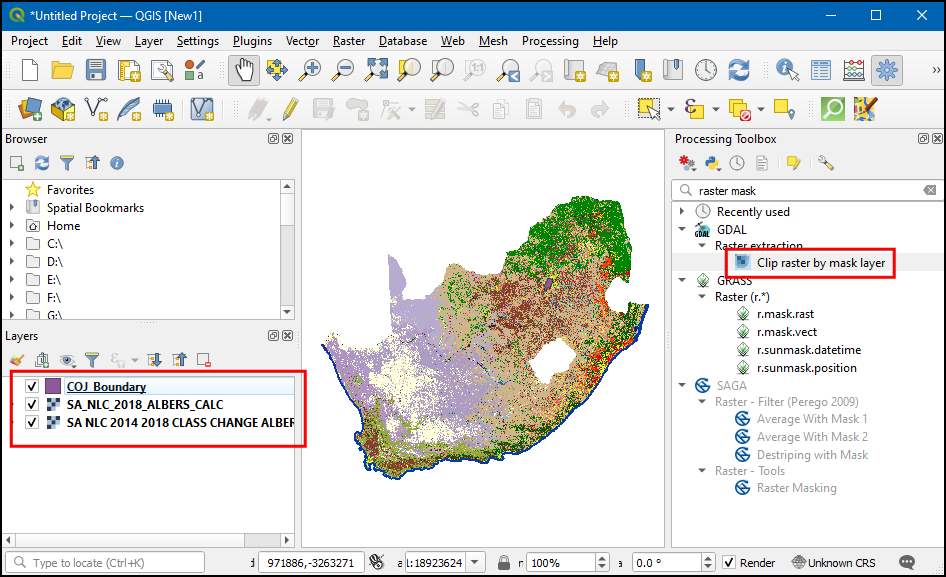
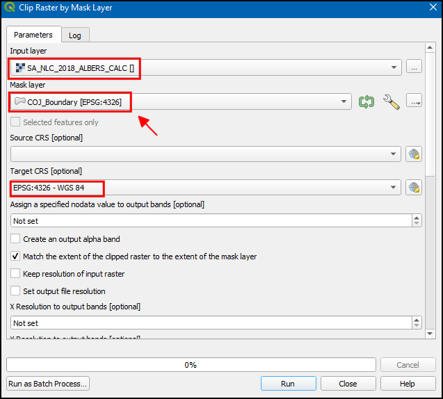
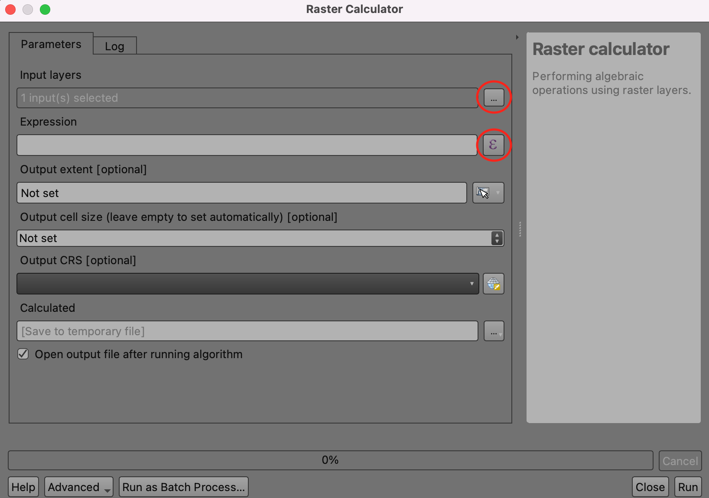

Ujaval Gandhi
Ujaval GandhiAnálisis Avanzado de Ráster (QGIS3)¶
En el tutorial anterior Estilos y Análisis Básicos Ráster (QGIS3), aprendió a realizar álgebra de ráster con la Calculadora de raster. Este tutorial se basa en estas técnicas y le muestra cómo utilizar otras herramientas de análisis ráster de la caja de herramientas de procesamiento. Aprenderá a procesar con los rásteres de Uso y Cobertura de la Tierra (UCT) en QGIS para extraer ciertos tipos de clases de cobertura del suelo y mapear los cambios.
Vista general de la tarea¶
Utilizaremos el conjunto de datos South African National Land Cover para identificar y extraer los asentamientos informales en la ciudad de Johannesburgo (Sudáfrica). También utilizaremos un conjunto de datos de evaluación de cambios para identificar los patrones de crecimiento urbano en la ciudad desde 2014 hasta 2018.
Otras habilidades que aprenderá¶
Cómo reproyectar datos ráster a otra proyección.
Cómo cargar un archivo Excel en QGIS.
Cómo ajustar la transparencia de una capa ráster en QGIS.
Obtener los datos¶
Para este tutorial descargaremos los siguientes conjuntos de datos
El conjunto de datos South African National Land Cover 2018: El nuevo conjunto de datos South African National Land-Cover 2018 se ha generado a partir de imágenes satelitales Sentinel 2 multitemporales de 20 metros y contiene 73 clases de cobertura de la tierra.
Evaluaciones de cambio de la cobertura de la tierra nacional de Sudáfrica 2018: Este conjunto de datos compara el cambio en 20 clases de cobertura de la tierra desde 2014 hasta 2018.
Límite de la ciudad de Johannesburgo: Un archivo shape de los límites de la ciudad de Johannesburgo, Sudáfrica.
El portal Environmental Geographical Information Systems (E-GIS) proporciona acceso a datos geoespaciales medioambientales de Sudáfrica. De este portal descargaremos los rásteres de South African National Land-Cover (SANLC).
Visite la página de Descarga de datos GIS. Haga clic en Estoy de acuerdo para aceptar las Condiciones de uso y continuar.

Deberá crear una cuenta gratuita para descargar el conjunto de datos. Haga clic en Deseo crear una cuenta y siga las instrucciones para crear una cuenta.

Una vez iniciada la sesión, busque South African National Land Cover (SANLC) 2018 Computer Automated Land Cover (CALC). Este conjunto de datos se ofrece en dos proyecciones diferentes. Para este tutorial, descargaremos el conjunto de datos ALBERS. Haga clic en él para descargar el archivo SA_NLC_2018_Albers_CALC_data.zip.

A continuación, busque New South African National Land Cover (SANLC) 2014 and 2018 Change Assessment Datasets Computer Automated Land Cover (CALC) y haga clic en SA_NLC_2014_2018_CLASS_CHANGE_CALC (DATASET AND REPORT) para descargar el archivo SA_NLC_2014_2018_CLASS_CHANGE_ALBERS_CALC.tif.vat.zip.

La Ciudad de Johannesburgo publica conjuntos de datos espaciales como parte del Marco de Desarrollo Espacial 2040 (SDF) para Johannesburgo data. De este sitio descargaremos el archivo shape de los límites.
Haga clic en el enlace de descarga http://bit.ly/joburg-sdf-16.

Haga clic en el directorio
SDF Shapefiles.

Descargue el archivo
SDF Shapefiles.zipy descomprímalo en una carpeta.

Para su comodidad, en el siguiente enlace encontrará una versión recortada de las capas necesarias:
Procedimiento¶
Busque la carpeta descargada y descomprimida en el navegador. Expándala y arrastra y suelta el
SA_NLC_2018_ALBERS_CALC.tifen el lienzo.

Una vez cargada la capa, podrá observar que el SRC estará configurado como SRC Desconocido en la parte inferior derecha. Haga doble clic en él para abrir el cuadro de diálogo Propiedades del proyecto - SRC.

En la parte inferior, verá una vista previa de la extensión de la proyección. Esta SRC desconocida es una proyección de área equitativa de Lambert personalizada definida para el país de Sudáfrica. Más adelante reproyectaremos esta capa a otra proyección. Haga clic en Aceptar.

Cargue las otras dos capas
SA_NLC_2014_2018_CLASS_CHANGE_ALBERS_CALC.tifyCOJ_Boundary. Verá que la capa rasterizada cubre todo el país. Para nuestro análisis, sólo nos interesa el área cubierta por la capaCOJ_Boundary. Ahora recortaremos la capa rasterizada a esta región. Vaya a . Haga doble clic para abrirla.

En la Cortar ráster por capa de máscara, seleccionamos
SA_NLC_2018_ALBERS_CALCcomo Capa de entrada, y luegoCOJ_Boundarycomo Capa de máscara. También tenemos una opción para reproyectar los datos a otra proyección. Es una buena práctica mantener todas las capas de datos en la misma proyección. Reproyectaremos los rásteres para que el SRC coincida con el de la capaCOJ_Boundary. SeleccioneEPSG:4326 - WGS 84como SRC objetivo`.

The default output data format is GeoTiff. GeoTiff files can get very large if they are not compressed. A good practice is to always apply a loss-less compression when creating new raster layers. Expand Advanced Parameters and choose
High Compressionas the Profile. Next, click the...button next to Clipped (mask) and select Save to file… to enter layer name asSA_NLC_2018_Clipped. Click Run.

Una vez que el algoritmo termine, no cierre la ventana. Vamos a aplicar la misma operación a la otra capa rasterizada. Cambie a la pestaña Parámetros y cambie la Capa de entrada a
SA_NLC_2014_2018_CLASS_CHANGE_ALBERS_CALC. Mantenga todas las demás opciones pero cambie el nombre de la capa de salida aSA_NLC_2014_2018_CLASS_CHANGE_Clipped. Haga clic en Ejecutar.

Las dos capas recortadas se cargarán ahora en el lienzo. Seleccione la capa original y haga clic en Quitar capa para eliminarlas.

Las tres capas restantes están ahora en el mismo SRC. Ahora podemos cambiar el SRC del proyecto al SRC de las capas. Haga clic con el botón derecho en cualquier capa recortada y elija .

Now the project CRS will be set to
EPSG:4326. Bring the SA_NLC_2018_Clipped layer to top.

Haga clic en SA_NLC_2018_Clipped y utilice la herramienta identificar de la barra de herramientas Atributos para hacer clic en la imagen e inspeccionar los valores de los píxeles. Verá que los valores de los píxeles van de 1 a 73. Estos valores representan una clase distinta de uso/cobertura del suelo.

Las clases del conjunto de datos se describen en la
Presentación de SANLC 2018, que puede descargarse del ``Portal de EGI <https://egis.environment.gov.za/sa_national_land_cover_datasets>`_. Para este ejercicio, nos interesan los asentamientos informales representados por los números de clase 51 a 54.

Vamos a extraer los píxeles que pertenecen a estas clases. Vaya a la herramienta . Haga doble clic para abrirla.

Click the
...button next to Input layers. Select theSA_NLC_2018_Clippedlayer and click OK. Next, click on theεbutton to open the expression window.

Enter the following expression to select pixels from class 51-54. The source image has only 1 band. The
@1suffix indicates the band number. Click OK to close the expression window.
"SA_NLC_2018_Clipped@1" >= 51 AND "SA_NLC_2018_Clipped@1" <= 54
Next, click the
...button next to Calculated and select Save to File….

Nombre el archivo de salida
residencial_informal.tify haga clic en Ejecutar.

Una vez finalizado el proceso, se añadirá a QGIS una nueva capa,
residencial_informal. Esta capa rasterizada sólo tiene valores de dos píxeles:1donde nuestra expresión evaluó true y0donde fue false. Los píxeles que aparecen en blanco son los que pertenecen a las clases de asentamientos informales. Estilizaremos mejor esta capa para poder ver claramente los asentamientos informales. Haga clic en el botón Abrir el panel de estilo de la capa.

Select the
residential_informallayer and change the renderer to be Paletted/Unique values. Click the Add values manually (+) button.

Cambie el Valor a
1y escribaResidencial Informalcomo Etiqueta. Seleccione un color de su elección.

Ahora podemos ver todos los asentamientos informales de la ciudad de Johannesburgo. Sería útil verlos en contexto con un mapa base. Tenemos acceso a una variedad de mapas base desde el complemento QuickMapServices. Una vez instalado el complemento, ve a para añadir la capa de OpenStreetMap.

Ahora puede identificar y verificar fácilmente si nuestro análisis ha identificado correctamente los asentamientos informales. Puede seleccionar la capa
residencial_informaly cambiar a la pestaña Transparencia en el panel Estilos de capa`. Puede reducir la Opacidad global para ver juntos los píxeles extraídos y el mapa base.

Ya ha completado la primera parte del tutorial. Ahora utilizaremos la capa ráster
SA_NLC_2014_2018_CHANGE_Clippedpara identificar las regiones que se urbanizaron entre 2014 y 2018. Desactive todas las capas exceptoSA_NLC_2014_2018_CHANGE_Clipped, y haga clic en el botón Abrir el panel de estilo de capas`. Cambie a la pestaña Transparencia e introduzca0en Valor adicional sin datos`. Esto hará que los píxeles con valor 0 sean transparentes.

Utilice la herramienta Identificar de la barra de herramientas Atributos para hacer clic en la imagen e inspeccionar los valores de los píxeles. Verá que los valores de los píxeles van de 21 a 420. Cada valor indica una transición de una de las 73 clases de origen a otra clase.

Su descarga de datos viene con una hoja de cálculo llamada
lcccodes.xlsx. Esta hoja tiene una hoja 03 urban_change_codes que da más detalles sobre cada valor de píxel. Nos interesan todos los valores de los píxeles en los que cualquier clase de 2014 cambió a una clase edificada de 2018. En la imagen de abajo, estos están resaltados en azul.

Nuestro objetivo es mapear los cambios en la clase construida. Aplicaremos una transformación en la capa
SA_NLC_2014_2018_CHANGE_Clippedpara que todos los valores de los píxeles sean mapeados desde sus valores originales a cualquiera de los siguientes valores.
|
Todos los píxeles que fueron una clase construida tanto en 2014 como en 2018 |
|
Todos los píxeles que cambiaron de clase no construida en 2014 a clase construida en 2018. |
|
Todos los píxeles que quedan |
Para ello, necesitamos crear una tabla que especifique estas reglas. Como QGIS es capaz de leer hojas de cálculo directamente, es el método más conveniente para crear esta tabla. Nuestra hoja de cálculo debe tener 3 columnas,
MIN,MAX, yOUTPUT. Cada fila debe ser el rango de valores ráster de entrada al que se le debe asignar un valor de salida. Cree una hoja de cálculo como la que se muestra a continuación y guárdela en su ordenador comoreclass.xlsx. También puede descargar una copia lista para usar desde este enlace - reclass.xlsx

Localice el archivo
reclass.xlsxen el navegador. Arrástrelo y suéltelo en la ventana principal.

A new layer
Sheet1will be added to the Layers panel. Right-click on it and select Open Attribute Table. Verify that the sheet was imported correctly and you have 3 columns namedMIN,MAXandOUTPUT. Open the tool.

In the Reclassify by layer dialog, select
SA_NLC_2014_2018_CHANGE_Clippedas the Raster layer. SelectSheet1as the Layer containing class breaks. SelectMIN,MAXandOUTPUTfields for their respective fields.

Amplíe la sección Parámetros avanzados. Cambie la etiqueta Límites de rango a
min <= value <= max. Haga clic en el botón … de Recalificación de la trama e introduzca el nombre del archivo de salida comobuiltup_change.tif. Haga clic en Ejecutar.

Una vez finalizado el procesamiento, se añadirá al lienzo una nueva capa
builtup_changecon valores de píxel0-2. En el panel de Estilos de capa, seleccioneValores únicosy haga clic enClasificar.

Elija el color de su elección para cada categoría y etiquete los valores de los píxeles «0», «1» y «2» como «no edificado», «edificado existente» y «edificado nuevo».

Ahora, en la pestaña Transparencia, reduzca la Opacidad globa, y active la capa
OSM Standardpara ver tanto los píxeles de buildup_change como el mapa base juntos.

If you want to give feedback or share your experience with this tutorial, please comment below. (requires GitHub account)